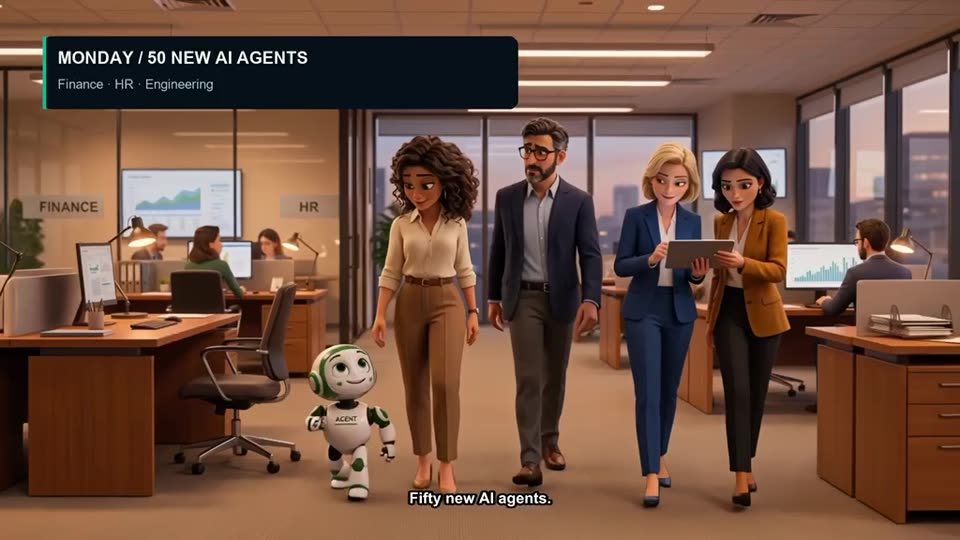
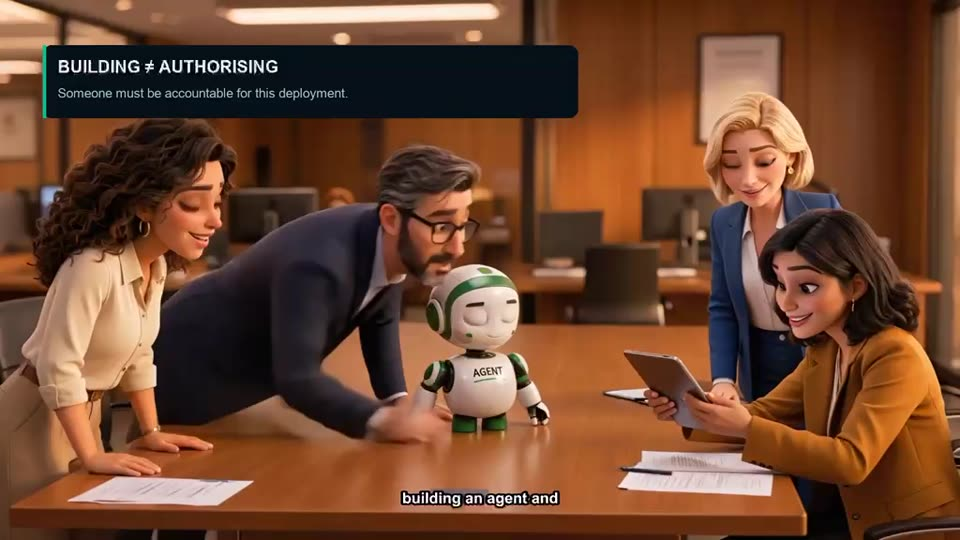
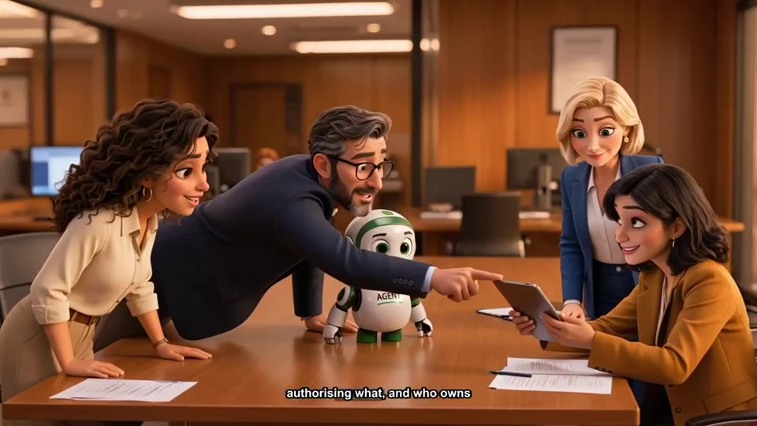
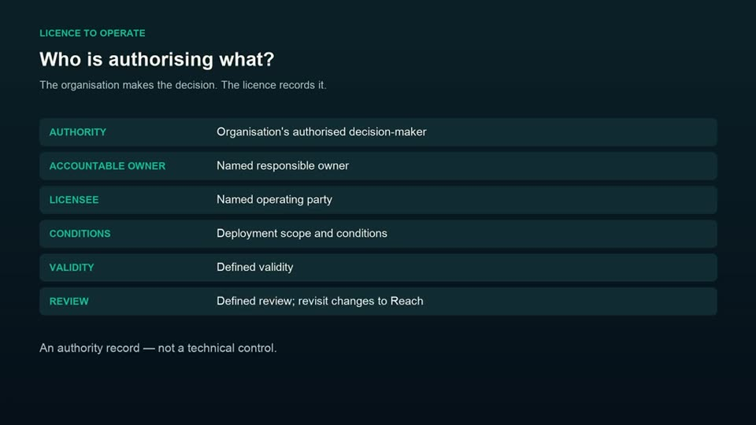
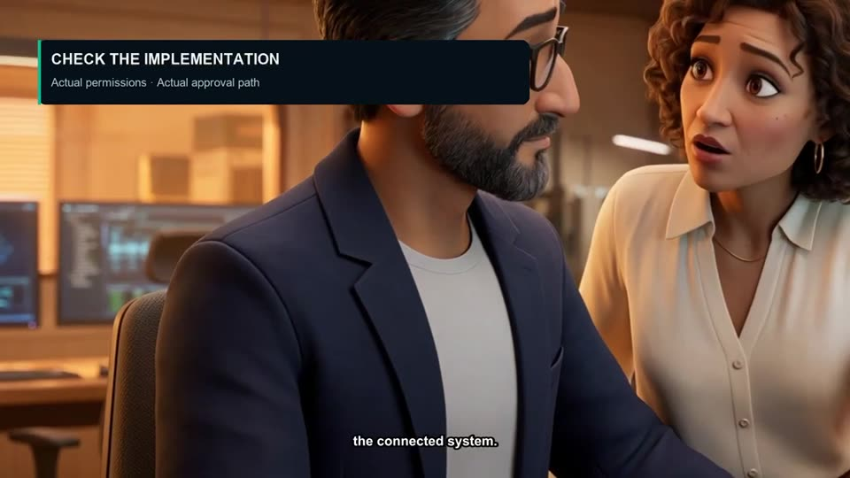
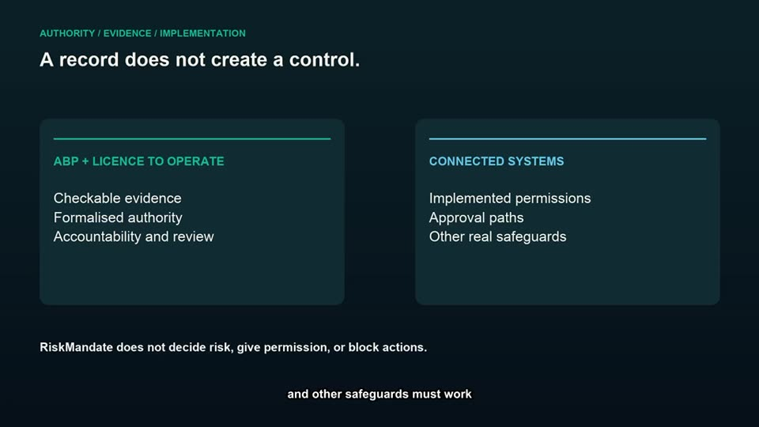

RiskMandate Stories: fifty new agents
By Silvio Switha, November 2026. 2 minutes 44 seconds, narrated and captioned. The operator's verdict: "good narrative, and the visual elements and animations match 90% of what is being described".
The story, scene by scene
- Monday: 50 new AI agents for finance, HR and engineering. A small robot, Agent, walks in with the team.
- Before we switch them on: Reach? Mandates? Gaps? Real barriers? "Who's we?" It's surprisingly difficult to put on paper.
- Building is not authorising. Building an agent and authorising it are different things: someone must be accountable for this deployment.
- A factual record teams can check: the Agent Behaviour Policy (ABP) records the agent's actual Reach, its business Mandate, the Gap between them, and the real Barriers. Evidence can be checked; unknowns remain visible.
- Your organisation is the authority. The facts inform the decision.
- Who is authorising what? A Licence to Operate records the authority, the accountable owner, the licensee, the conditions, the validity and the review. An authority record, not a technical control.
- Same agent, different Reach. Then its Reach changed: a new connector. The previous decision does not automatically cover the changed deployment: check the implementation, update the evidence, review the authorisation.
- A record does not create a control. The ABP and Licence give checkable evidence, formalised authority, accountability and review; the connected systems hold the implemented permissions, approval paths and other real safeguards. RiskMandate does not decide risk, give permission, or block actions. It is not inline.
- Different teams, one checkable record. Business buyers and leadership: what are we deploying and authorising? Security and risk: checkable evidence and accountability. Operations: scope, owners and conditions. Developers: implementation detail and review of changes.
- The next question: across fifty agents, what exposure are we taking on?
 |  |
 |  |
 |  |
The key concepts
- Agent Behaviour Policy (ABP): a factual record of an agent's Reach, Mandate, Gap and Barriers that teams can check.
- Licence to Operate: who authorised the deployment, who owns it, under what conditions, until when, and when it is reviewed.
- Building is not authorising. Someone must be accountable for each deployment.
- Reach changes. A new connector changes what the agent can do; the old decision does not cover it.
- A record is not a control. RiskMandate makes authority and evidence checkable; permissions and safeguards live in the connected systems.
- One record, many readers: leadership, security and risk, operations, developers.
The captions above were read from frames of the video; a full transcript is on the board.
Give feedback
On the videos page.